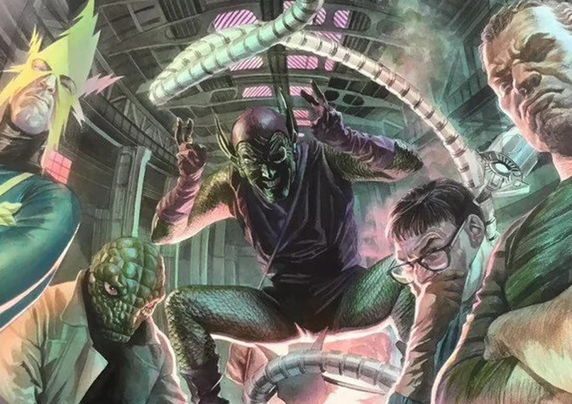
Les Sinister Six
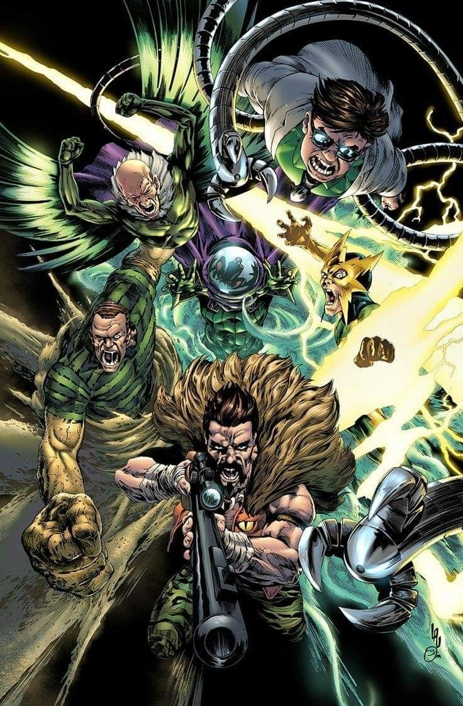
Les Sinister Six sont une équipe de super-vilains, réunis à l'origine afin d'éliminer Spider-Man.
C'est une équipe composée d'ennemis du Tisseur.
Après avoir subi trois défaites consécutives face à Spider-Man, le Docteur Octopus comprit qu'il allait avoir besoin d'aide pour vaincre ce dernier.
Il contacta alors tous les super-vilains connus que Spider-Man avait croisés, et seul cinq d'entre-eux répondirent à l'appel :
La première équipe de Sinister Six

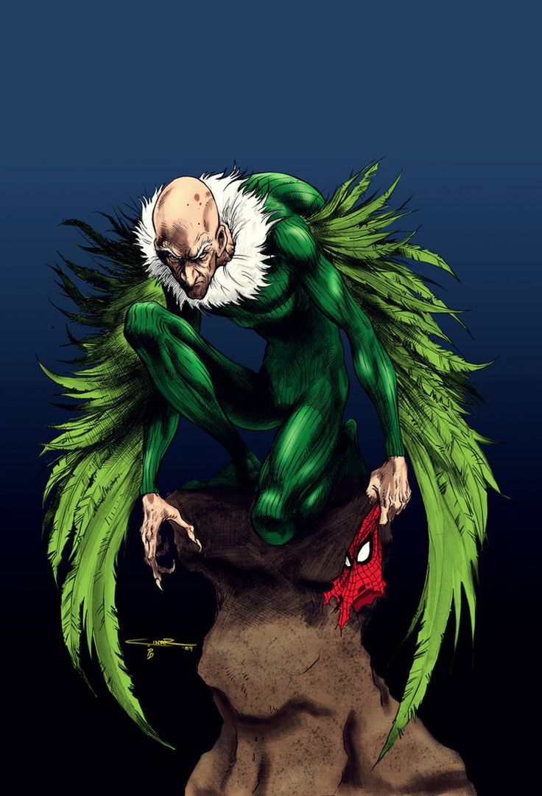


Sachant qu'il ne parviendrait jamais à maintenir l'équipe soudée bien longtemps, le Docteur Octopus élabora rapidement un plan de bataille qui assurerait la gloire personnelle de chacun des méchants et une mort prématurée à Spider-Man.
Chaque membre de l'équipe affronterait Spider-Man dans un lieu soigneusement choisi, jusqu'à sa défaite.
Les Sinister Six, ayant réalisé que la secrétaire du Daily Bugle, Betty Brant, jouait un rôle important dans la vie de Spider-Man, décidèrent de la kidnapper, ainsi qu'une innocente spectatrice : Tante May.
Le Vautour alla vendre la mèche à J. Jonah Jameson, l'avertissant d'informer Spider-Man que Betty était retenue en otage avec tante May et que s'il voulait les revoir en vie, il devrait combattre les Sinister Six.
Bien que Peter ne possède plus ses pouvoirs à ce moment-là, il enfile son costume de Spider-Man et part affronter Electro dans une centrale électrique.
Au cours du combat, Peter retrouve ses pouvoirs d'araignée (on suppose qu'il s'agit d'un blocage psychologique suite à la mort de son oncle) et vainquit facilement Electro.
Spidey affronte ensuite Kraven le Chasseur, qui le confronte à des félins, et le vaincra également.
Après avoir vaincu Mystério et ses copies androïdes des X-Men, l'Homme-Sable (qui a piégé l'araignée dans une chambre indestructible et sans air) et le Vautour, Spidey affronte Doc Ock, qui l'attire dans un énorme bocal. Les deux ennemis s'affrontent, et Spider-Man remporte la victoire.
Les six super-vilains sont ensuite envoyés en prison.
Des années après ces événements, les méchants s'évadèrent de prison et décidèrent de se venger.
Cependant, entre-temps, Kraven s'était suicidé et le Super-Bouffon prit sa place. Mais ils essuyèrent une nouvelle défaite.
Quelques mois plus tard, le groupe se réunit à nouveau pour tenter de conquérir le monde à l'aide d'armes extraterrestre.
La famille de l'Homme-Sable (qui avait aidé à vaincre les Sinister Six à leur dernière réunion) fut touchée par une bombe, et l'Homme-Sable, persuadé qu'Octopus les avait attaqués pour le punir de sa trahison, rejoignit les autres membres des Sinister Six dans un plan pour se venger d'Octopus.
Malgré son chagrin, l'Homme-Sable contacta Spider-Man et lui demanda de suivre le groupe pour se prémunir contre toute trahison ou autre imprévu.
Octopus, qui avait récupéré ses bras d'Adamantium et volé des soldats robots, vainquit facilement les autres membres de Six, puis électrisa l'Homme-Sable avec une arme qui transforma son corps en en verre solide.
Les Sinister Six assemblés se sont déchaînés, volant des armes et des technologies avancées, et réussirent à vaincre Spider-Man, le professeur Hulk, Deathlok et Solo.
Hulk, vengeur, a écrasé les Six, puis s'est fait vaincre par Octopus avec ses bras d'Adamantium.
Spider-Man, blessé, récupéra rapidement grâce à des plâtres cybernétiques, et affronta les méchants alors qu'ils s'emparaient d'une base d'Hydra pour accéder à de nouvelles armes.
Le dernier membre des Sinister Six d'Octavius se révéla être Gog (une créature extraterrestre) et un combat éclata entre les héros appelés à l'aide par Spidey (dont les Quatre Fantastiques, Nova, Hulk et Solo) qui se termina lorsque le corps en verre de l'Homme-Sable fut brisé et déchira le corps d'Octopus, le laissant entre la vie et la mort.
Une variante du groupe, les Sinister Seven, fut formée par le Super-Bouffon afin de combattre Kaine, un clone défectueux de Peter qui tuait les méchants, dont le Docteur Octopus et le fils de Kraven.
Les membres restants des Sinister Six se rassemblèrent pour la première fois depuis la mort d'Octopus, et recrutèrent de nouveaux membres pour traquer Kaine.
Mais Kaine les traquait déjà de son côté. Peter fut contraint d'intervenir et d'empêcher ses ennemis de s'entre-tuer.
Les Sinister Seven
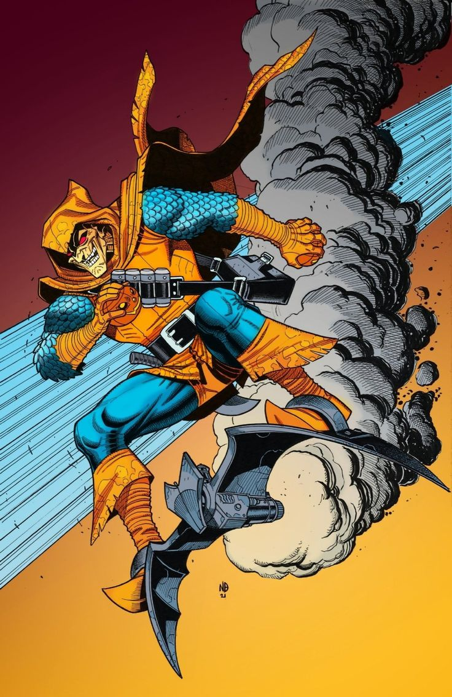
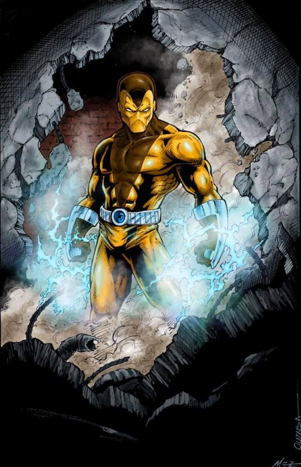
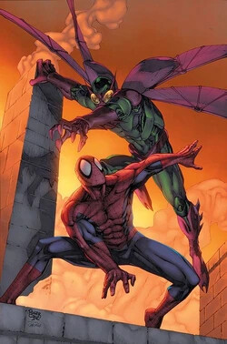
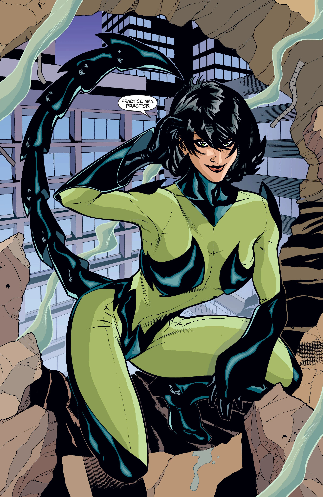
Quelques années plus tard, Norman Osborn, le Bouffon Vert, fut démasqué publiquement et emprisonnée après avoir perdu un combat contre Spider-Man.
Vaincu mais inflexible, Osborn élabora un plan d'urgence diabolique.
Il contacta un groupe de super-vilains qui nourrissaient également une rancune envers Spider-Man, et tous avaient été financés par la fortune d'Osborn pendant des années.
Avides de vengeance, les méchants acceptèrent de s'unir, et les Douze Sinistres furent formés.
L'équipe des Sinister Twelve

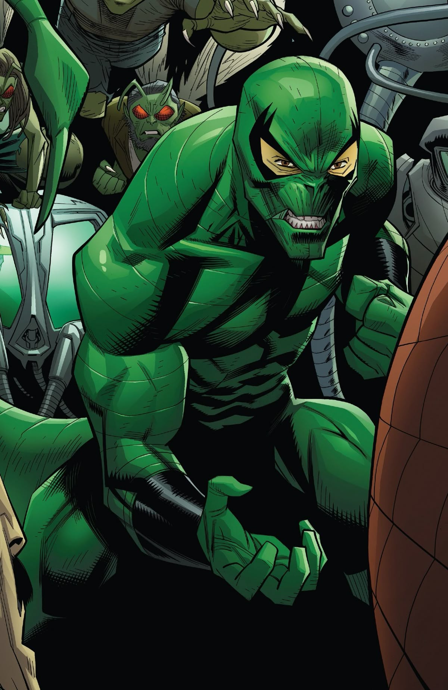
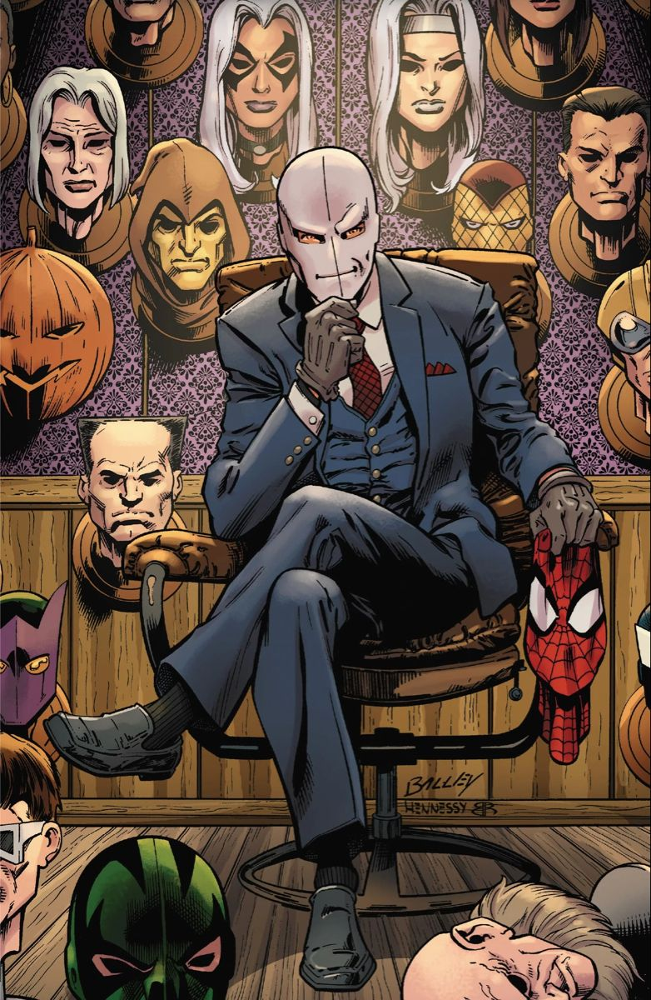

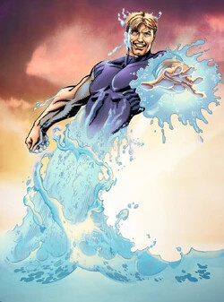
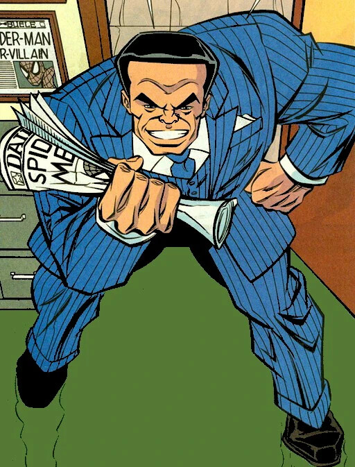
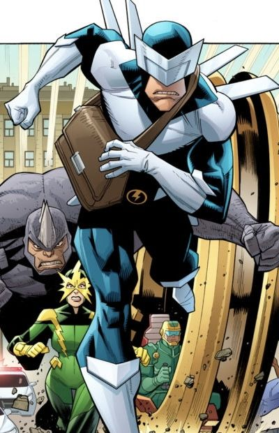

Mac Gargan, le Scorpion, était le chef des Douze pendant qu'Osborn était en prison, et il kidnappa la tante May de Peter Parker et menacé de la tuer si Spider-Man n'aidait pas Osborn à s'échapper de prison.
Spider-Man, désespéré, fera évader Osborn en compagnie de la Chatte Noire, et sera confronté aux Douzes.
Le nouveau membre de l'équipe, Scorpion, choquera tout le monde à son arrivée, révélant s'être lié au symbiote d'Eddie Brock, devenant le nouveau Venom.
Bien qu'Osborn fût mécontent de ce nouveau pouvoir, il regarda avec joie les méchants rassemblés converger vers Spider-Man et Black Cat, désespérément en infériorité numérique.
Malgré les difficultés, Spider-Man et Black Cat luttèrent héroïquement jusqu'à l'arrivée de Captain America, Iron Man, Daredevil, Yellowjacket et des Quatre Fantastiques (Mary Jane, l'épouse de Peter, avait appelé le SHIELD à l'aide, de peur que son époux ne tombe dans un piège).
Un Bouffon Vert furieux s'élança et la kidnappa, et Spider-Man le poursuivit, en esquivant les assauts de Venom qui tentait de l'arrêter.
Spider-Man et le Bouffon s'affrontèrent au sommet d'un pont, rappelant les événements tragiques ayant entraîné la mort de Gwen Stacy, cette fois-ci au péril de la vie de Mary Jane.
Finalement, Osborn livra un indice crucial sur la position de May, et fut vaincu par une combinaison de coups de feu tirés par MJ , frappés par la foudre et attaqués par le Docteur Octopus, qui avait subi un lavage de cerveau de la police pour tenter de le tuer à minuit.
Le Bouffon tomba dans la rivière en contrebas, et Tante May fut retrouvée et mise en sécurité.
Peu après, Peter reçut une lettre d'Osborn, le remerciant pour toute l'excitation que leur rivalité lui avait procuré au fil des ans, et lui conseilla de se reposer avant leur prochaine rencontre.
Le reste des Douze fut maîtrisé par les héros, puis arrêtés.
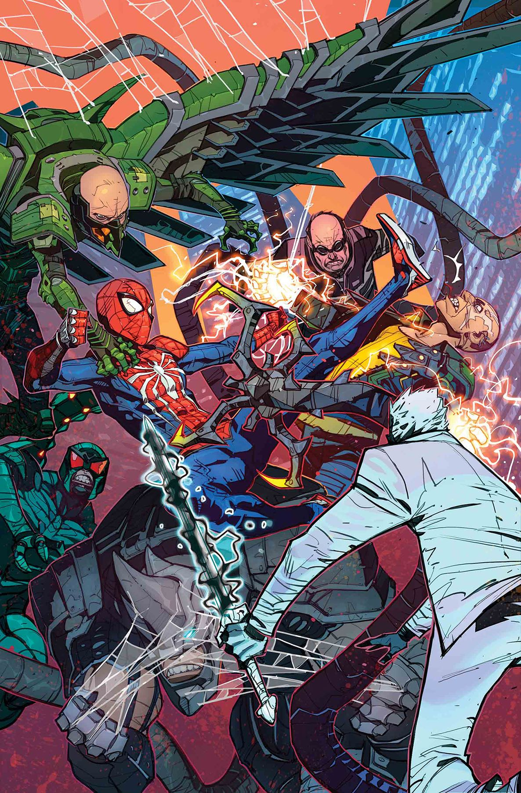
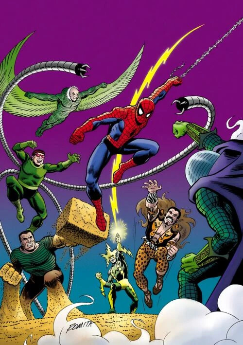
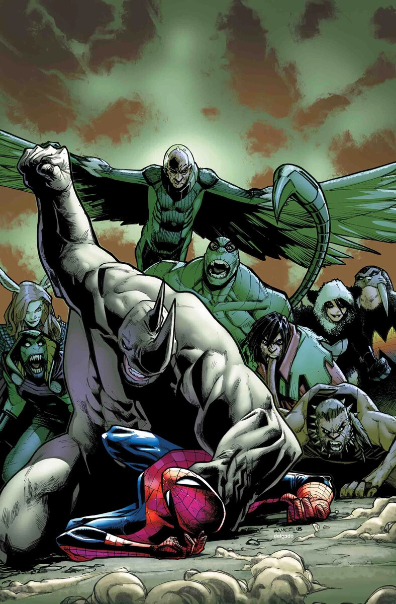
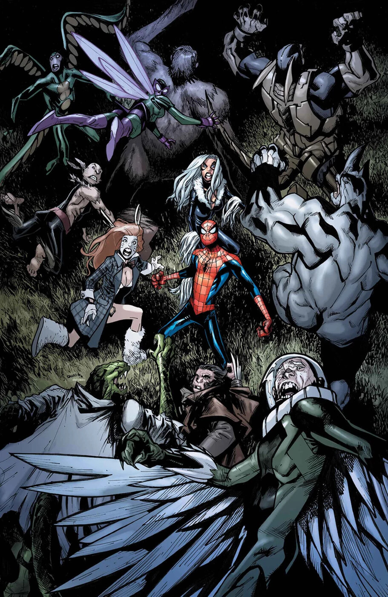
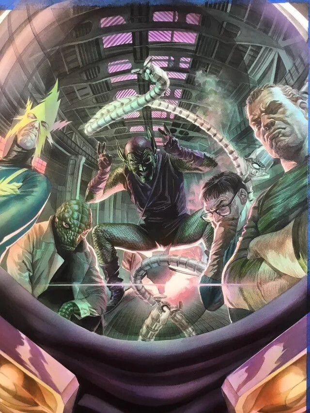
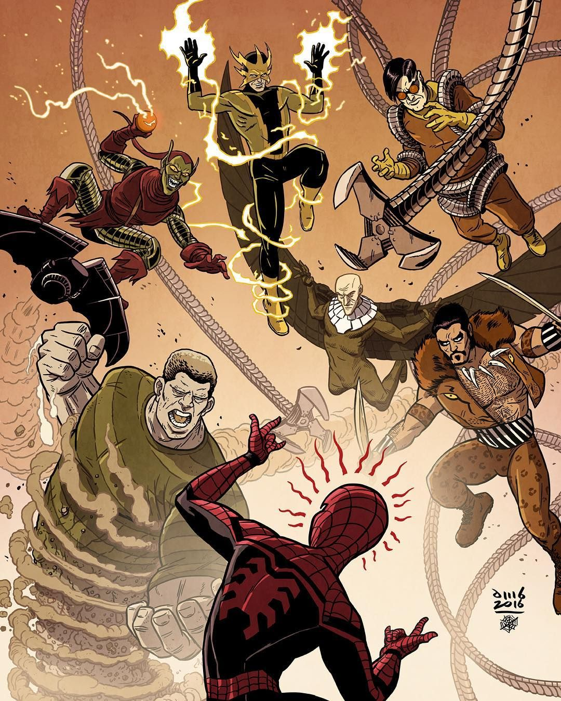
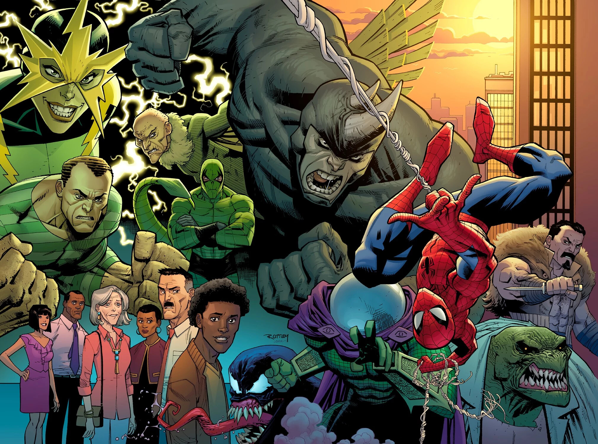
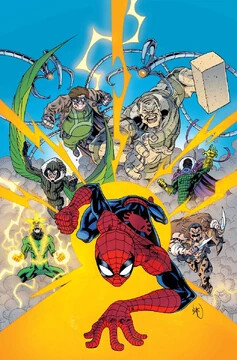